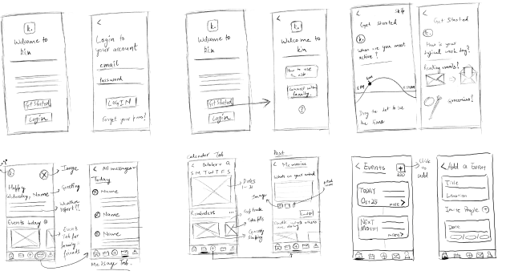
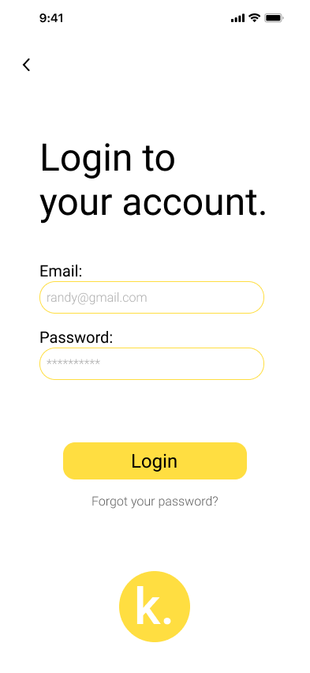
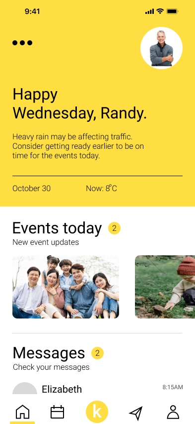
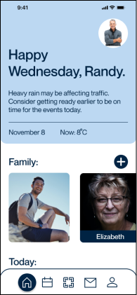
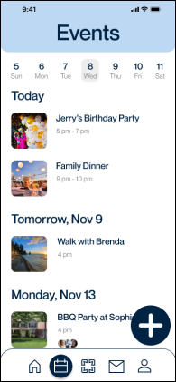
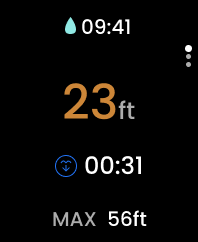
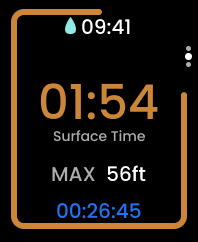

Selected Projects
Project 1
Kin App - Academic Project
This was an academic project done in Fall 2023 for IAT334.


Project 2
OkDive App - Personal Project
This was made for an UI/UX Design Challenge.


This was an academic project done in Fall 2023 for IAT334.
This was made for an UI/UX Design Challenge.
This was a team project for IAT334 Fall 2023, this project was done in teams of 3. The project’s aim was to develop an app for seniors who want to connect with their family. I was the lead UI/UX designer for this project, and came with the name “kin” for the app.
After having the initial feedback from the TAs on how the idea is coming along, I went ahead and made initial sketches for the app’s interface to get further feedback from the teaching team and move forward with this idea.
With the choice of a warm color orange, I came up with this designs while my teammates created their own designs. I wanted to incorporate design principles I follow so I came up with this design.
 After receiving various feedback to improve on, I created one single design with different design languages like color schemes and font choices. I further simplified the application by focusing on one main feature, which is the photo-posting space.
 I wanted to designed the app in such a way that the users would understand what to do just by looking. For the home page, I added affordances such as the image bleeding of the page to give users an indication that more content is present there and they can swipe it, same with the today section at the bottom of the page. I also added a “+” button for adding family members which can be easily accessed and adding people from there is pretty simple too.
This was a solo project done for an online UI/UX Design competition held in Summer 2023. The purpose of the project was to create something that you would be proud of and come up with design quickly. The design competition was a rapid fire one which only lasted for 4 days.
OKDive is a diving app concept that aims to bring a more convenient way for free divers to get prepared for their diving journey.
The process of planning requires careful consideration of factors such as weather, tides,
diving partner, and more... each categories takes great efforts to plan.
I came to wonder, how can we improve diving process?
What is so hard about dive planning?
With this question in mind, I conducted interviews with professional freedivers to gain
insight into their experiences and discover ways
in which the diving process could be improved.
After gaining some initial insights into the diving process, I decided to attend freediving classes to deepen my understanding and experience about the situation.
The process roughly goes like: Plan -> Dive -> Review. While there are many steps and procedures involved in each of these phases, I learned that one of the most crucial aspects of diving is monitoring weather and environmental conditions.
Divers should check on weather, environment information frequently, and observe the tide pattern before going into the water.
Final Challenge was making the whole app working which was done with the help of prototyping in Figma and in addition to the mobile app, also showed how the app would look like if used with an apple watch.
 

|

|

|

|

|
| #FFFFFF | #D9D9D9 | #ABE2E6 | #383838 | #000000 |
Will use javascript here later to make it more aesthetic.
Example of the link.